Le Mandarin (Terre-616)
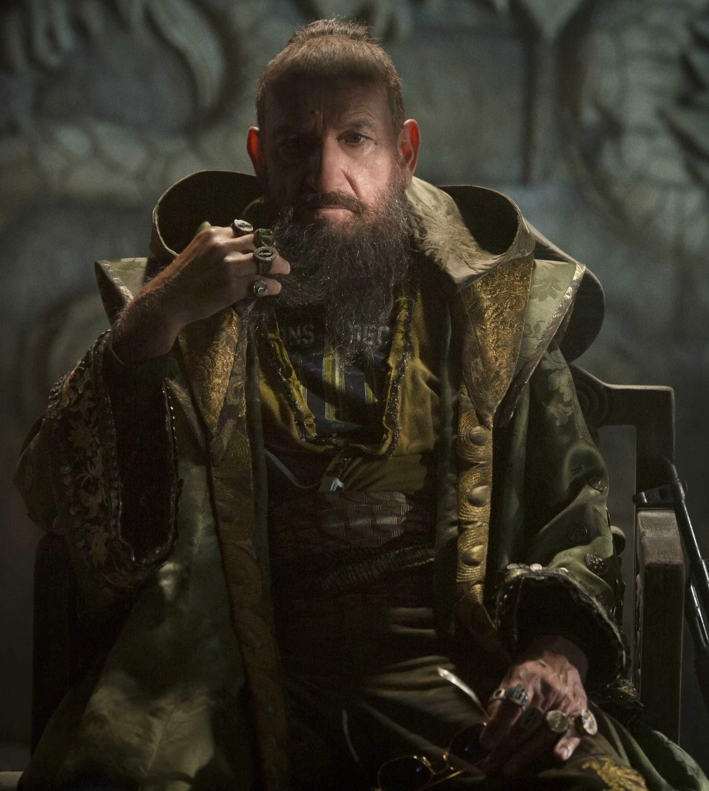
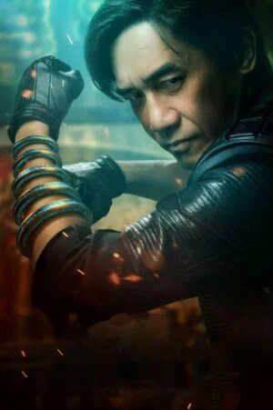
Origines :
L'homme qui allait devenir le Mandarin naquit d'une prostituée anglaise dans la fumerie d'opium du petit village d'Habuquan, en Mongolie-Intérieure, où il passa toute son enfance aux travaux forcés.
Après la mort de sa mère par overdose, il tua son proxénète, qu'il pensait être son père, et tomba dans le crime.
L'avènement de la révolution communiste le contraignit à la fuite.
Dans sa fuite, le Mandarin tomba sur l'épave d'un vaisseau spatial Makluan, au fond d'une grotte de la Vallée des Esprits, où son passager, Axonn-Karr, gisait agonisant.
Fasciné par les dix petits cylindres tournant dans le moteur du vaisseau, le Mandarin ignora les supplications de l’extraterrestre et s'empara des artefacts, l'achevant par la même occasion.
La similarité de ces objets avec des bagues était frappante, et le Mandarin commença à les porter comme telles, les étudiant une à une et s'appropriant leurs pouvoirs.
Lorsqu'il les porta toutes en même temps pour la première fois, son esprit fut touché par les guerriers emprisonnés dans les anneaux.
Ces esprits influencèrent le Mandarin, faisant de sa quête ultime une mission : tous les ressusciter.
Grâce au pouvoir des anneaux, il soumit les villages alentour, avant de devenir un trafiquant d'armes influent en prenant pour la première fois son surnom de « Mandarin ».
Il acquit même son propre territoire, la Cité Mandarin, située au large des côtes du continent.
A mesure que son pouvoir grandissait, le Mandarin tentait d'échapper à son passé.
Lorsqu'il racontait sa jeunesse, il ne présentait comme un aristocrate respectable et instruit, né d'une noble anglaise et descendant direct de Gengis Khan.
Il est probable que le Mandarin ait même sombré dans le délire, consumé par ses propres mensonges, et ait fini par y croire comme à des vérités.
Afin de percer le véritable potentiel de ses anneaux, le Mandarin s'allia au seigneur de guerre Wong-Chu.
Ciblant les lignes d'approvisionnement de la société d'armement américaine Stark Industries vers les forces militaires américaines stationnées à Siancong, le Mandarin attira dans le pays le PDG de l'entreprise, l'inventeur Tony Stark.
Le Mandarin avait l'intention de contraindre Stark et son compagnon de captivité, Ho Yinsen, à percer les secrets de l'anneau.
Entre-temps, Wong-Chu ordonna à Yinsen et Stark de lui fabriquer des armes.
La technologie à laquelle ils eurent accès servit en réalité à la création d'une armure intelligente grâce à laquelle Stark s'échappa après le sacrifice de Yinsen pour lui permettre de recharger l'armure.
.jpg)
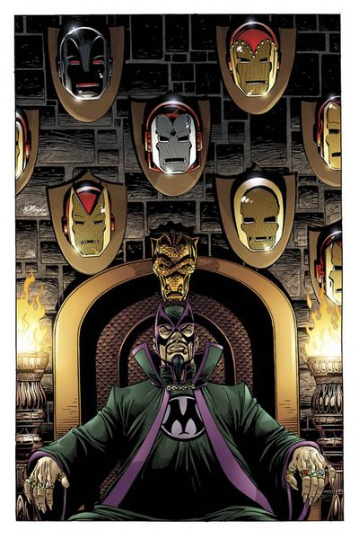
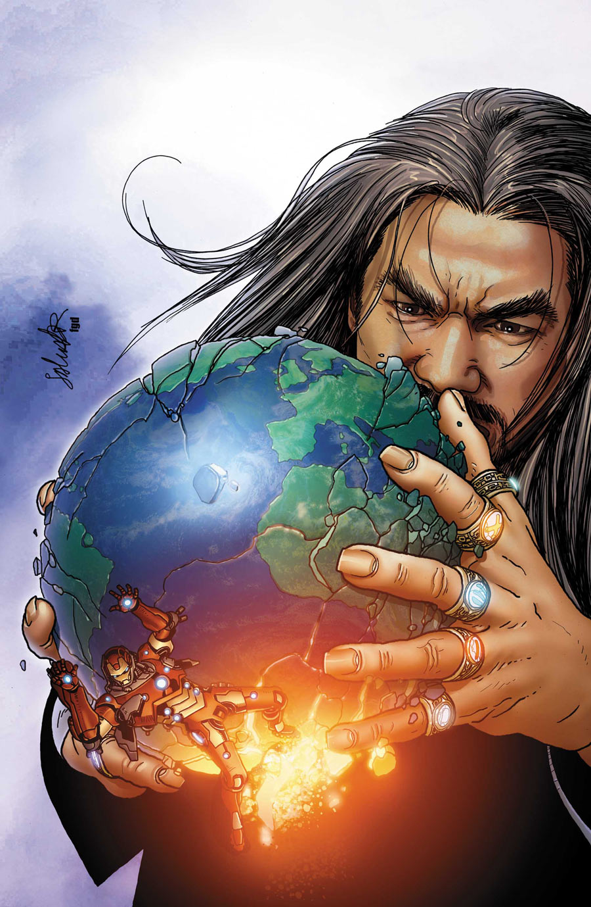
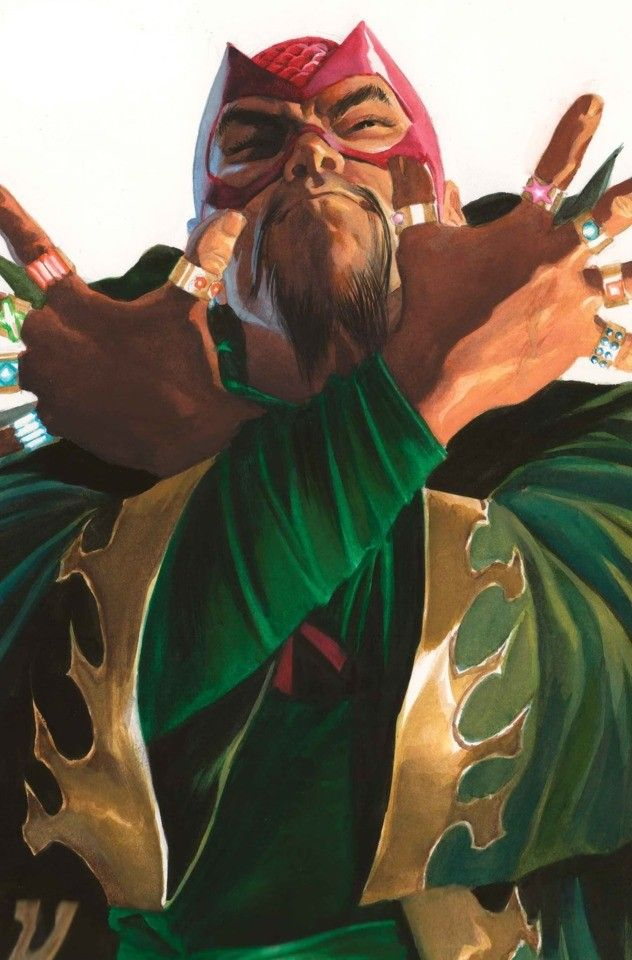
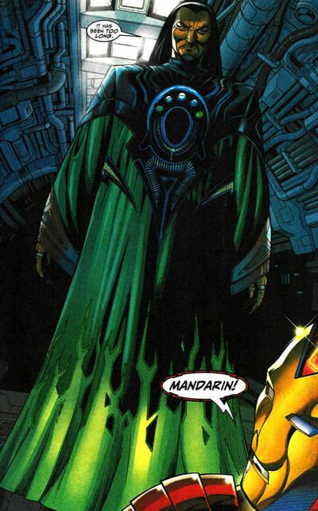
.jpg)
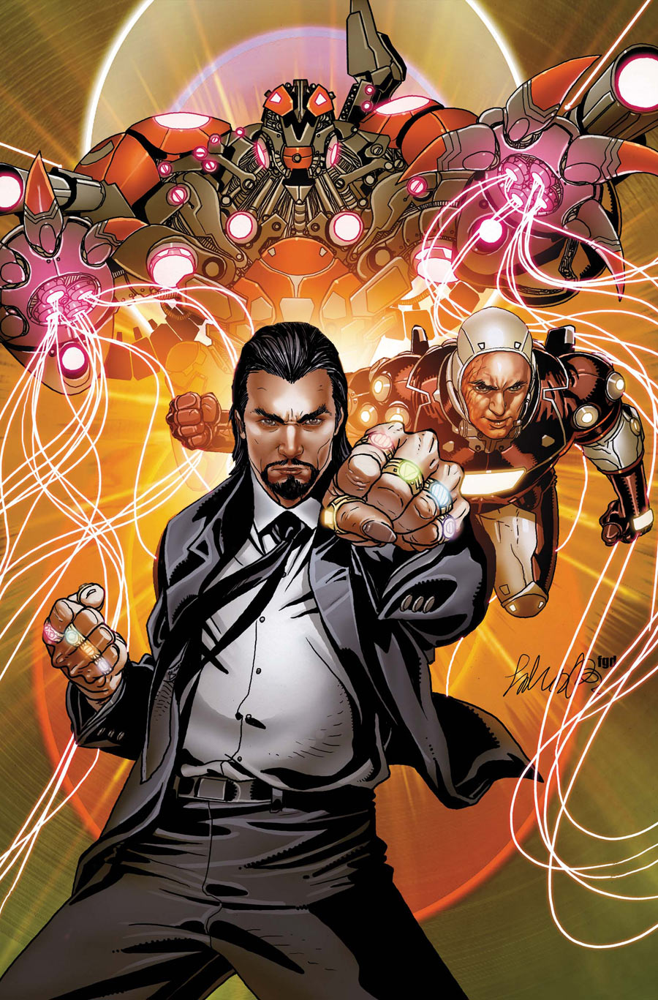
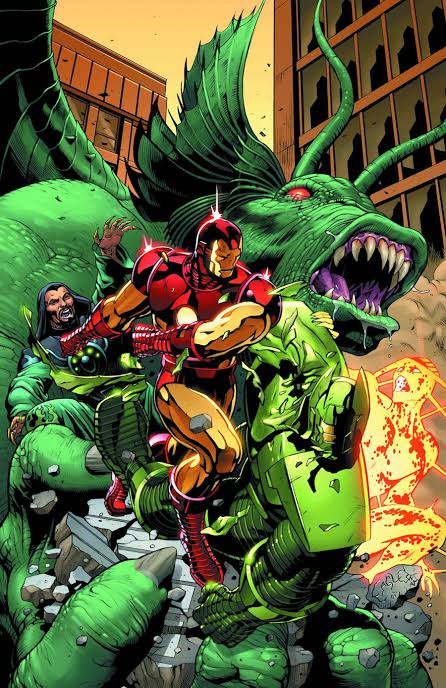
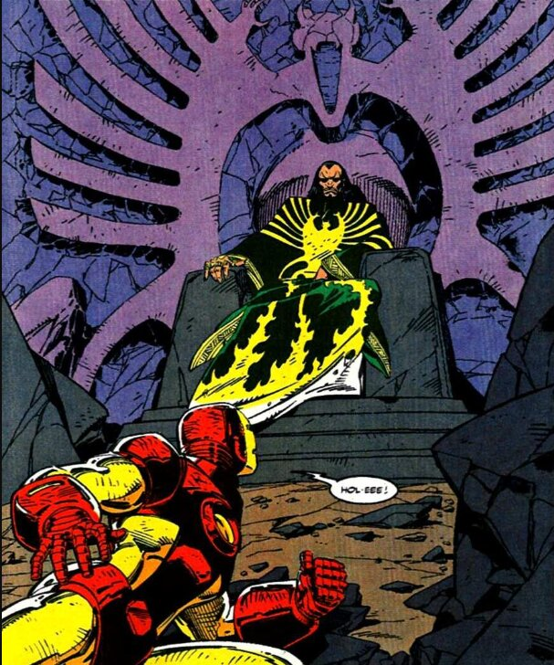
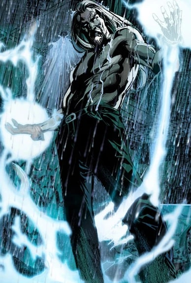
Capacités :
Le Mandarin est un grand expert en arts martiaux, qui ne possède aucun réel super-pouvoir.
C'est un tacticien brillant et brutal, ainsi qu'un stratège doué, respectant un code d'honneur très strict.
Ses véritables pouvoirs proviennent des dix anneaux d'origine extraterrestre qu'il porte à chaque doigt.
Chacun de ces anneaux possède un pouvoir différent :
- -Le pouce droit lui permet de modifier la matière en remodelant les atomes et les molécules d'une substance, en accélérant ou ralentissant leurs mouvements afin de produire différents effets.
- -L'index droit lui permet de projeter diverses formes d'énergie, principalement celle de neutrons extrêmement rapides, produisant une immense force de concussion.
- -Le majeur droit provoque des mouvements dans l'air de plus en plus rapide, capables de créer un tourbillon. Il peut être utilisé comme une arme offensive, ou comme un moyen de propulser son porteur dans les airs.
- -L'annulaire droit émet un rayon d'énergie capable de détruire tous les liens entre les atomes et les molécules qu'il touche, pour littéralement désintégrer n'importe quoi.
- -L'auriculaire droit crée une zone de ténèbres absolues semblant absorber toute source de lumière extérieure.
- -Le pouce gauche émet diverses formes d'énergie provenant du spectre électromagnétique au complet, prenant souvent la forme d'un laser. Il peut aussi créer une force de gravitation suffisante pour enfouir son ennemi sous la terre.
- -L'index gauche projette des rayons infrarouges afin de produire des flammes ou d'enflammer des matériaux combustibles.
- -Le majeur gauche accroît les énergies mentales du Mandarin, lui permettant de contrôles les esprits d'autres personnes sur une distance de 3 mères, en leur transmettant ses ordres par télépathie.
- -L'annulaire gauche émet des décharges d'énergie électrostatiques dont les quantités sont déterminées par le possesseur de l'anneau.
- -L'auriculaire gauche émet d'intenses ondes de froid pouvant étourdir un adversaire, provoquer la transformation de l'air en glace et diminuer la température d'un objet pour lui faire atteindre le zéro absolu.
Il possède un lien psychique très puissant avec ses anneaux, qu'il peut désormais contrôler à distance.

Apparence :
Le Mandarin est généralement représenté comme un homme asiatique âgé, grand et mince, avec une silhouette athlétique.
Il possède des cheveux noirs, généralement coiffés en arrière, et porte souvent une moustache fine descendant vers sa bouche, accompagnée d'une barbe fine ou d'un bouc.
Il porte fréquemment une longue tunique ou une robe orientale, souvent richement décorée.
Il porte des vêtements amples et sophistiqués, évoquant ses origines chinoises et son statut de seigneur de guerre ou de conquérant.
Dans certaines versions, il porte une cape ou une longue veste évoquant une tenue plus militaire ou impériale.
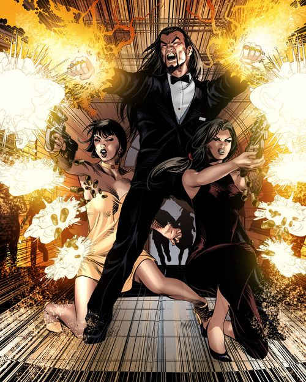

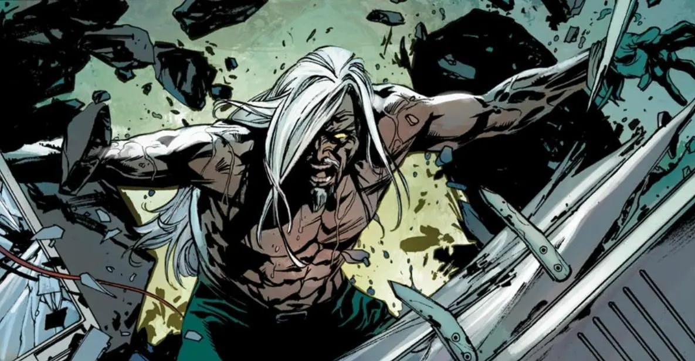
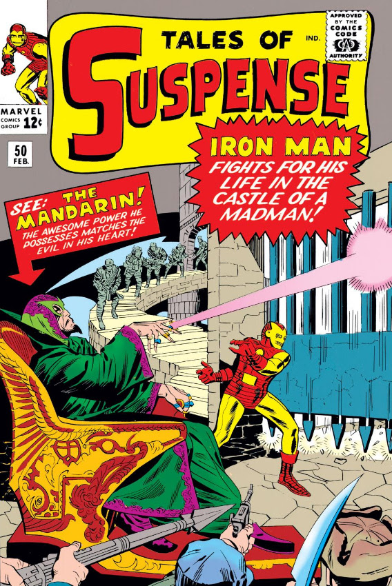
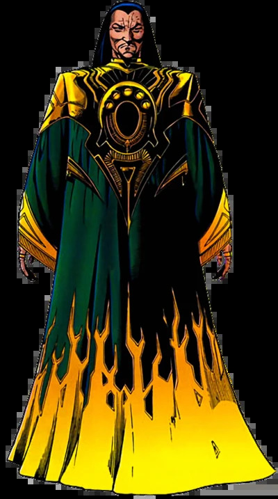